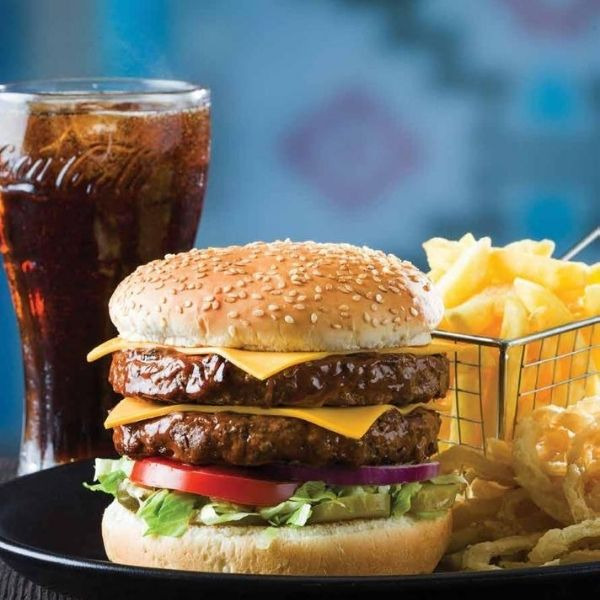
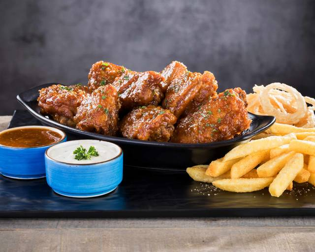

SPUR



We at Spur are a proudly South African team dedicated to serving great food in a warm, family-friendly atmosphere. Since opening in 1967, we’ve grown from a single steakhouse into a global brand known for our hearty meals, from tender steaks and ribs to burgers and salads. Our mission is simple ... to bring families and friends together to share good times, good food, and the true spirit of South African hospitality.
BUSINESS HOURS:
Sun-Thur : 09:00-20:00
Fri-Sat : 09:00-22:00
Cell : 082 741 7895
Tel : 010 002 3336
People With A Taste For Life.
FILLER
FILLER